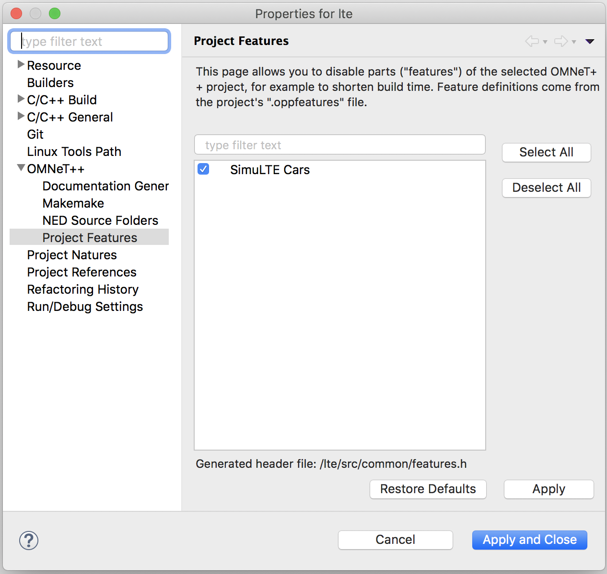
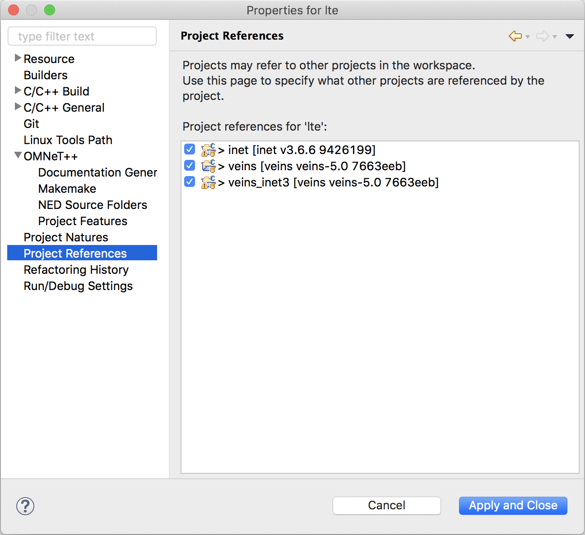

A 3GPP compliant CV2X Mode 4 Open Source implementation for OMNeT++
Note the below are the dependency versions that have been tested, other versions of the software may still work, though support for such setups will not be possible.
./configure WITH_OSGEARTH=no WITH_OSG=noNow the project needs to have the correct Project features activated to ensure SimuLTE runs correctly. Right click on the lte project and select Properties Ensure that the OMNeT++ | Project Features and the Project References are all ticked like the below images. i.e. SimuLTE Cars is active and inet, veins, veins_inet3.  
At this point you should be able to run a simulation, this is done the same way as running any veins based simulations.
python2 sumo-launchd.py